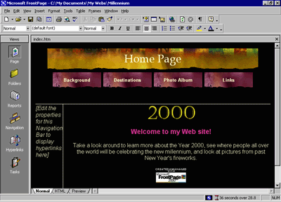

| ||||
Although the addition of pictures, lists, forms, shared borders, and navigation bars has given the pages in the Millennium Celebration Web a more streamlined and organized look, you may wonder what to do about the rather bland appearance of black and blue text on a white background. After all, this Web site is about celebrating an event. You want the pages to look more lively and fun.
Imagine how time-consuming it would be if you had to design a color scheme for text and graphics, and create graphical page banners, navigation buttons, list bullets, and background textures for all the pages in your Web site. Now imagine how many more custom graphics you would need to create if you maintained more than one Web site and you didn't want any of your Web sites to look the same.
FrontPage includes more than 50 professionally designed themes with matching color schemes that you can apply to any or all pages in your Web site. A theme consists of design elements for bullets, fonts, pictures, navigation buttons, and other graphics. When applied, a theme gives pages, page banners, navigation bars, and other elements of a Web site an attractive and consistent appearance.
To apply a theme to the Millennium Celebration Web
FrontPage brings the home page back into view.
FrontPage displays the Themes dialog box. Here, you can select from a list of themes that FrontPage installed by default, or choose to install the complete set of themes from your FrontPage 2000 CD-ROM. You can make choices about the appearance of the theme, preview theme elements, and modify the selected theme.
When you click the name of a theme, the Sample of Theme window shows a sample of the graphical elements that are contained in the selected theme. This way, you can first preview a theme before applying it to selected or all pages in your Web site.
Before applying a theme, you can select theme options that affect the appearance of the theme's components. For example, selecting Vivid colors applies brighter colors to text and graphics, selecting Active graphics animates certain theme components, and selecting Background picture applies a graphical background to the pages in your Web site. You can also choose to apply a theme as a cascading style sheet (Apply using CSS).
For the Millennium Celebration Web, you'll clear these defaults.
Since this is the first time you're applying a theme to a Web site, FrontPage displays a message to let you know that applying a theme will overwrite some of the manual formatting you may have done on your pages.
We've purposely not included much manual design work in this tutorial, so you can acknowledge this message and proceed to apply the theme.
The theme named "Artsy" is applied to all the pages in your current Web site.
Your page should now look like this:

As you can see, applying the theme has dramatically changed the appearance of the home page. The page banner and navigation buttons are no longer plain text; now they're colorful graphics. The page background has changed from white to black, which simulates the night sky that the millennium fireworks will appear in, and the font has changed color and is a little larger.
Displaying graphical navigation buttons on all pages
FrontPage brings the Background page back into view.
Note that the page has inherited its theme and theme elements from the home page, but the vertical navigation bar in the left border still shows plain text hyperlinks. By default, vertical navigation bars are displayed as plain text, so they look this way even after you apply a theme. You can easily change navigation bar settings even after a theme is applied.
FrontPage changes the navigation formatting and uses the graphical buttons included with the theme. The Web site now has an attractive and professional look.
Did you find this material useful? Gripes? Compliments? Suggestions for other articles? Write us!
© 1999 Microsoft Corporation. All rights reserved. Terms of use.